건축기사 (2010-09-05 기출문제)
1과목: 건축계획
1. 주택의 현관에 대한 설명 중 옳지 않은 것은?
- 현관의 위치는 대지의 형태, 방위, 도로와의 관계에 영향을 받는다.
- 현관의 크기는 현관에서 간단한 접객의 용무를 겸 하는 이외의 불필요한 공간을 두지 않는 것이 좋다.
- 현관의 위치는 주택의 북측이 가장 좋으며 주택의 남측이나 중앙부분에는 위치하지 않도록 한다.
- 현관의 크기는 주택의 규모와 가족의 수, 방문객의 예상수 등을 고려한 출입량에 중점을 주어 계획하는 것이 바람직하다.
(정답률: 82%)

2. 미술관의 전시실의 계획에 관한 설명 중 옳지 않은 것은?
- 채광 및 조명은 인공조명을 배제하고 자연채광을 위주로 계획한다.
- 관람객의 동선상 적당한 위치에 간단한 휴식이나 기분전환을 위한 장소를 설치하는 것이 좋다.
- 전시실의 평면형태 중 부채꼴형은 규모가 큰 경우 한눈에 전체를 파악하는 것이 어렵다.
- 전시실의 평면형태 중 자유형은 미로와 같은 복잡한 공간을 피하기 위해 일부 강제적인 동선이 사용된다.
(정답률: 81%)
3. 공장건축의 레이아웃 형식 중 기능식 레이아웃으로서, 기능이 동일하거나 유사한 공정 또는 기계를 집합하여 배치하는 방식으로 다품종 소량생산이나 주문생산의 경우와 표준화가 어려운 경우에 적합한 형식은?
- 제품중심의 레이아웃
- 공정중심의 레이아웃
- 고정식 레이아웃
- 혼성식 레이아웃
(정답률: 84%)
4. 종합병원의 건축계획에 관한 설명으로 옳지 않은 것은?
- 간호사의 보행거리는 24m 이내가 되도록 한다.
- 수술부부분은 타 부분의 통과교통이 없는 곳에 위치시키도록 한다.
- 병동배치방식 중 분관식(Pavilion Type)은 동선이 짧게 되는 이점이 있다.
- 일반적으로 병원건축의 모든 시설규모는 입원환자의 병상수에 의해 결정된다.
(정답률: 86%)
5. 전통 주거건축 중 부엌, 방, 대청, 방의 순으로 배열되는 일(一)자형 평면을 가진 민가형은?
- 평안도 지방형
- 함경도 지방형
- 남부 지방형
- 개성 지방형
(정답률: 81%)
6. 호텔건축의 기준층 계획에 대한 설명 중 옳지 않은 것은?
- 기준층은 호텔에서 객실이 있는 대표적인 층을 말한다.
- 동일 기준층에 필요한 것으로는 서비스실, 배선실 등이 있다.
- 기준층의 객실수는 기준층의 면적이나 기둥간격의 구조적인 문제에 영향을 받는다.
- H형 또는 ㅁ자형 평면은 거주성이 좋아 일반적으로 가장 많이 사용되는 형식이다.
(정답률: 73%)
7. 1주간의 평균 수업시간이 30시간인 어느 학교의 설계제도교실이 사용되는 시간은 24시간이다. 그 중 6시간은 다른 과목을 위해 사용된다. 설계제도실의 이용율과 순수율은 각각 얼마인가?
- 이용률 80%, 순수율 25%
- 이용률 80%, 순수율 75%
- 이용률 60%, 순수율 25%
- 이용률 60%, 순수율 75%
(정답률: 78%)
8. 레드번(Radburn) 주택단지계획에 대한 설명으로 옳지 않은 것은?
- 주거구는 슈퍼블록 단위로 계획하였다.
- 주거지 내의 통과교통으로 간선도로를 계획하였다.
- 보행자의 보도와 차도를 분리하여 계획하였다.
- 중앙에는 대공원 설치를 계획하였다.
(정답률: 70%)
9. 사무소 건축에서 유효율(Rentable Ration)이 의미하는 것은?
- 건축면적에 대한 대실면적
- 연면적에 대한 대실면적
- 기준층 면적에 대한 대실면적
- 연면적 대한 건축면적
(정답률: 69%)
10. 전시공간의 특수기법 중 현장감을 가장 실감나게 표현하는 방법으로 하나의 사실 또는 주제의 시간 상황을 고정시켜 연출하는 것으로 현장에 임한 느낌을 주는 것은?
- 파노라마 전시
- 디오라마 전시
- 아일랜드 전시
- 하모니카 전시
(정답률: 74%)
11. 다음의 각 사찰에 대한 설명 중 옳지 않은 것은?
- 부석사의 가람배치는 누하진입 형식을 취하고 있다.
- 화엄사는 경사된 지형을 수단(數段)으로 나누어서 정지(整地)하여 건물을 적절히 배치하였다.
- 통도사는 산지에 위치하거나 산지가람처럼 건물들을 불규칙하게 배치하지 않고 직교식으로 배치 하였다.
- 봉정사 가람배치는 대지가 3단으로 나누어져 있으며 상단부분에 대웅전과 극락전 등 주요한 건물들이 배치되어 있다.
(정답률: 69%)
12. 호텔계획에 대한 설명 중 옳은 것은?
- 호텔의 동선에 물품동선과 고객동선은 교차시키는 것이 좋다.
- 프런트 오피스는 수평동선이 수직동선으로 전이되는 공간이다.
- 현관은 퍼블릭 스페이스의 중심으로 로비, 라운지와 분리하지 않고 통합시킨다.
- 주식당은 숙박객 및 외래객을 대상으로 하며, 외래객이 편리하게 이용할 수 있도록 출입구를 별도로 설치하는 것이 좋다.
(정답률: 76%)
13. 다음 중 극장의 음향계획에서 극장 측면벽에 사용되는 재료에 대한 설명으로 가장 알맞은 것은?
- 무대쪽 벽은 반사재, 객석쪽 벽은 흡음재
- 무대쪽 벽은 흡음재, 객석쪽 벽은 반사재
- 모두 반사재
- 모두 흡음재
(정답률: 79%)
14. 사무실 내의 책상배치의 유형 중 좌우대향형에 대한 설명으로 옳은 것은?
- 4개의 책상이 맞물려 십자를 이루도록 배치하는 형식으로 그룹작업을 요하는 업무에 적합하다.
- 대향형과 동향형의 양쪽 특성을 절충한 형태로 커뮤니케이션의 형성에 불리하다.
- 낮은 칸막이로 한 사람의 작업활동을 위한 공간이 주어지는 형태로 독립성을 요하는 전문직에 적합한 배치이다.
- 책상이 서로 마주보도록 하는 배치로 면적효율은 좋으나 대면 시선에 의해 프라이버시가 침해당하기 쉽다.
(정답률: 64%)
15. 극장의 평면형 중 애리나(Arena)형에 대한 설명으로 옳은 것은?
- Picture Frame Stage라고도 불리운다.
- 연기자가 한쪽 방향으로만 관객을 대하게 된다.
- 가까운 거리에서 관람하면서 가장 많은 관객을 수용할 수 있다.
- 배경은 한폭의 그림과 같은 느낌을 주게 되어 전체적인 통일의 효과를 얻는 데 가장 좋은 형태이다.
(정답률: 86%)
16. 은행의 건축계획에 대한 설명 중 옳지 않은 것은?
- 고객이 지나는 동선은 되도록 짧게 한다.
- 큰 건물의 경우에도 고객출입구는 되도록 1개소로 한다.
- 업무 내부의 일의 흐름은 되도록 고객이 알기 어렵게 한다.
- 고객의 공간과 업무공간 사이에는 시선을 차단시키는 구조벽체나 기둥 등을 설치하여 원칙적으로 구분이 있도록 한다.
(정답률: 63%)
17. 아파트 평면형식에 대한 설명 중 옳지 않은 것은?
- 계단실형은 프라이버시가 양호하다.
- 집중형은 프라이버시가 좋지 않으며 시끄럽다.
- 편복도형은 복도가 개방형이므로 각 호의 통풍 및 채광상 양호하다.
- 중복도형은 좁은 대지에서 집약형 주거가 가능하나 대지에 대해서 건물 이용도가 낮다
(정답률: 74%)
18. 사무소 건축의 엘리베이터 대수 계산을 위한 이용자수의 산정기준은?
- 아침 출근 시 5분간의 이용자 수
- 정오의 이용 인원의 평균수
- 오후 퇴근 시 5분간의 이용자 수
- 하루 이용 총 인원의 1분간의 평균
(정답률: 86%)
19. 주택에서 부엌 작업대의 배치유형 중 ㄷ자형에 대한 설명으로 옳은 것은?
- 가장 간결하고 기본적인 설계형태로 길이가 4.5m 이상 되면 동선이 비효율적이다.
- 두 벽면을 따라 작업이 전개되는 전통적인 형태이다.
- 평면계획상 외부로 통하는 출입구의 설치가 곤란하다.
- 작업동선이 길고 조리면적은 좁지만 다수의 인원이 함께 작업할 수 있다.
(정답률: 74%)
20. 다음과 같은 특징을 갖는 건축양식은?
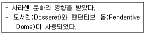
- 그리스 건축
- 로마 건축
- 로마네스크 건축
- 비잔틴 건축
(정답률: 76%)
2과목: 건축시공
21. 합성수지 중 건축물의 천장재, 블라인드 등을 만드는 열가소성수지는?
- 알키드수지
- 요소수지
- 폴리스티렌수지
- 실리콘수지
(정답률: 74%)
22. 건설 프로세스의 효율적인 운영을 위해 형성된 개념으로 건설생산에 초점을 맞추고 이에 관련된 계획 관리, 엔지니어링, 설계 구매, 계약, 시공, 유지 및 보수 등의 요소들을 주요대상으로 하는 것은?
- CIC(Computer Integrated Construction)
- MIS(Managment Information System)
- CIM(Computer Integrated Manufacturing)
- CAM(Computer Aided Manufacturing)
(정답률: 78%)
23. 다음 중 갱품(Gang Form)에 대한 설명으로 옳지 않은 것은?
- 주로 타워크레인 등의 시공장비에 의해 한번에 설치하고 탈형한다.
- 초기 세팅기간은 약 1일 정도로 타 거푸집에 비하여 소요일수가 적다.
- 전용횟수는 30~40회 정도이다.
- 제치장 콘크리트인 경우 가설 비계공사를 하지 않아도 된다.
(정답률: 61%)
24. 도장공사 시 유의사항을 옳지 않은 것은?
- 도장마감은 도막이 너무 두껍지 않도록 얇게 몇회로 나누어 실시한다.
- 도장을 수회 반복할 때에는 칠의 색을 동일하게 하여 혼동을 방지해야 한다.
- 칠하는 장소에서 저온, 다습하고 환기가 충분하지 못할 때에는 도장작업을 금지해야 한다.
- 도장 후 기름, 산, 수지, 알카리 등의 유해물이 배어 나오거나 녹아 나올 때에는 재시공한다.
(정답률: 80%)
25. 콘크리트 표준시방서에서 정의하는 일반콘크리트 잔골재의 유해물 함유량 한도에서 염화물(NaCl 환산량)의 허용한도 값은?
- 0.02% 이하
- 0.04% 이하
- 0.1% 이하
- 0.6% 이하
(정답률: 61%)
26. 석탄의 고온 건류 시 부산물로 얻어지는 흑갈색의 유성액체로서 가열도포하면 방부성은 좋으나 목재를 흑갈색으로 착색하고 페인트칠도 불가능하게 하므로 보이지 않는 곳에 주로 이용되는 유성방부제는?
- 케로신
- PCP
- 염화아연 4% 용역
- 콜타르
(정답률: 72%)
27. 토질의 암의 분류에서 다음 설명에 해당하는 것은?
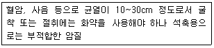
- 풍화암
- 연암
- 경암
- 보통암
(정답률: 61%)
28. 건식공법에 의한 석재 붙이기에 필요한 연결철물로 석재의 상하 양단에 설치하여 1차 연결철물은 지지용으로, 2차 연결철물은 고정용으로 사용하는 것은?
- 꽂음촉
- Fastener
- 앵커볼트
- 꺾쇠
(정답률: 61%)
29. 공사현장의 가설건축물에 대한 설명으로 옳지 않은 것은?
- 하도급자 사무실은 후속공정에 지장이 없는 현장 사무실과 가까운 곳에 둔다.
- 시멘트 창고는 통풍이 되지 않도록 출입구 외에는 개구부 설치를 금하고 벽, 천장, 바닥에는 방수, 방습처리한다.
- 변전소는 안전상 현장사무실에서 가능한 멀리 위치시킨다.
- 인화성 재료저장소는 벽, 지붕, 천장의 재료를 방화구조 또는 불연구조로 하고 소화서리를 갖춘다.
(정답률: 80%)
30. 매스 콘크리트(Mass Concrete)의 타설 및 양생에 대한 설명으로 옳지 않은 것은?
- 내부온도가 최고온도에 달한 후는 보온하여 중심부와 표면부의 온도차 및 중심부의 온도강하 속도가 크지 않도록 한다.
- 부어넣기 중의 이어붓기 시간간격은 외기온이 25℃ 미만일 때는 150분으로 한다.
- 부어넣는 콘크리트의 온도는 온도균열을 제어하기 위해 가능한 저온(일반적으로 35℃ 이하)으로 해야한다.
- 거푸집널 및 보온을 위하여 사용한 재료는 콘크리트 표면부의 온도와 외기온도의 차이가 적어지면 해체한다.
(정답률: 65%)
31. 로드의 선단에 붙은 스크루 포인드(Screw Point)를 회전시키며 압입하여 흙의 관입저항을 측정하고, 흙의 경도나 다짐상태를 판정하는 시험은?
- 베인시험(Vane Test)
- 딘월샘플링(Thin Wall Sampling)
- 표준관입시험(Penetration Test)
- 스웨덴식 사운딩 시험(Swedish Suonding Test)
(정답률: 64%)
32. 기성콘크리트말뚝 지지력 판단방법 중 동재하시험(Pile Dynamic Analysis : PDA)은 항타 시 말뚝 몸체에 발생하는 응력과 속도를 분석 측정하여 말뚝 지지력을 결정하는 방법이다. 다음 중 이 시험과 가장 거리가 먼 계측기기는?
- 가속도계(Accelerometer)
- 변형률계(Strain Transducer)
- 항타분석기(Pile Drive Analyzer)
- 지중수평변위계(Inclino meter)
(정답률: 50%)
33. 대린벽으로 구획된 조적조의 벽에서 벽 길이가 9m인 경우 이 벽체에 설치할 수 있는 개구부 폭의 합계는?
- 1.5m 이하
- 3.0m 이하
- 4.5m 이하
- 6.0m 이하
(정답률: 57%)
34. 거푸집의 존치기간과 관련된 내용 중 옳지 않은 것은?
- 받침기중의 존치기간은 슬래브 밑, 보 밑 모두 설계기준강도 50% 이상 콘크리트의 압축강도가 얻어진 것이 확인될 때까지로 한다.
- 바닥슬래브 밑, 지붕슬래브 밑, 보 밑의 거푸집널은 원칙적으로 받침기둥을 해체한 후에 떼어낸다.
- 기초, 보옆, 기둥 및 벽의 거푸집널 존치기간은 콘크리트의 압축강도가 5MPa 이상이 도달한 것이 확인될 때까지로 한다.
- 평균기온이 20℃ 이상인 경우 조강포틀랜드시멘트의 경우 2일 이상 경과하면 압축강도시험을 하지 않고도 거푸집을 떼어낼 수 있다.
(정답률: 42%)
35. 다음 중 QC(Quality Control)활동의 도구가 아닌것은?
- 기능 계통도
- 산점도
- 히스토그램
- 특성요인도
(정답률: 79%)
36. 다음에서 설명하는 미장재료는?
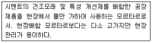
- 바라이트 모르타르
- 셀프레벨링재
- 초속경 모르타르
- 드라이 모르타르
(정답률: 66%)
37. 굵은 골재의 최대치수가 40mm일 경우, 콘크리트펌프 압송관의 최소 호칭치수로 가장 적당한 것은?
- 50mm
- 75mm
- 10mm
- 125mm
(정답률: 56%)
38. 철근 콘크리트구조에서 철근이음에 대한 설명으로 옳지 않은 것은?
- 철근의 이음위치는 되도록 응력이 큰 곳을 피한다.
- 철근의 이음이 한 곳에 집중되지 않도록 엇갈리게 교대로 분산시켜서 이어야 한다.
- 철근이음에는 일반적으로 서로 겹쳐 이어대는 겹침 이음과 용접이음, 커플러, 슬리브에 의한 기계적 이음이 있다.
- 철근의 이음은 한 곳에서 철근 수의 최소 반 이상을 이어야 한다.
(정답률: 66%)
39. 벽돌쌓기의 시공에 관련된 설명으로 옳지 않은 것은?
- 연속되는 벽면의 일부를 나중쌓기할 때에는 그 부분을 층단 들여쌓기로 한다.
- 내력벽쌓기에는 세워쌓기나 옆쌓기가 주로 쓰인다.
- 벽돌쌓기 줄눈로르타르가 부족하면 하중부담이 일정하지 않아 벽면에 균열이 발생할 수 있다.
- 창대쌓기는 물흘림을 위해 벽돌을 15°정도 기울여 벽면에는 3~5cm 정도 내밀어 쌓는다.
(정답률: 72%)
40. 석재의 표면 마무리의 물갈기 및 광내기에 사용되는 재료가 아닌 것은?
- 금강사
- 숫돌
- 황산
- 산화주석
(정답률: 69%)
3과목: 건축구조
41. 그림과 같은 단면에 전단력 50kN이 가해진 중립축에서 상방향으로 100mm 떨어진 지점의 전단응력은?
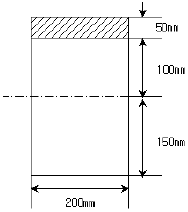
- 0.85MPa
- 0.79MPa
- 0.73MPa
- 0.69MPa
(정답률: 38%)
42. 그림과 같이 스팬이 7.2m이며 간격이 3m인 합성보 A의 슬래브 유호폭 be 는?
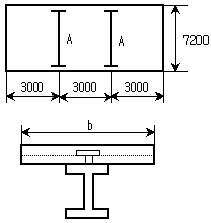
- 1,400mm
- 1,600mm
- 1,800mm
- 2,000mm
(정답률: 56%)
43. 철근콘크리트 보에서 고정하중과 활하중에 의하여 구한 설계모멘트 Mu=540kNㆍm라면 이 때의 공칭강도를 구하면? (단, 중립축의 깊이(c)는 220mm, 최외단 압축연단에서 최외단 인장철근까지의 거리(dt)는 550mm, 철근의 항복강동(fu)는 400MPa)
- 661kNㆍm
- 754kNㆍm
- 798kNㆍm
- 832kNㆍm
(정답률: 33%)
44. 다음 골조-아웃리거 시스템에 관한 설명 중 ( )안에 가장 알맞은 것은?
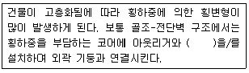
- 벨트트러스
- 프리스트레스트 빔
- 합성슬래브
- 슈퍼칼럼
(정답률: 75%)
45. 그림과 같은 트러스가 절점 C 및 D에서 하중을 지지하고 있다. 이 트러스에서 응력이 발생하지 않는 부재는 어느 것인가?
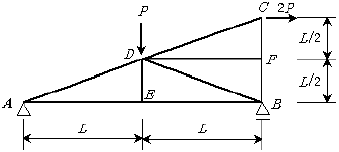
- DF
- DE 및 DB
- DE 및 DF
- DE, DB 및 DF
(정답률: 70%)
46. 다음 그림과 같은 철근콘크리트 보에서 처짐을 계산하지 않아도 되는 경우의 보의 최소두께는 얼마인가? (단, 단위질량 Pc=2,300kg/m3인 보통콘크리트이며, fck=27MPa, fy=400MPa 임)
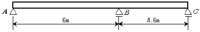
- 385mm
- 324mm
- 297mm
- 286mm
(정답률: 44%)
47. 건축구조용 압연강이라 하며, 건축물의 내진성능을 확보하기 위하여 항복점의 상한치 제한 등에 의한 품질의 편차를 줄이고, 용접성 및 냉간 가공성을 향상시킨 강재는?
- SN 강재
- SM 강재
- TMCP 강재
- SS 강재
(정답률: 73%)
48. 그림과 같은 3회전단의 포물선아치가 등분포하중을 받을 때 단면력에 관한 설명으로 옳은 것은?
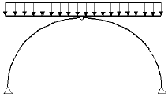
- 축방향력만 존재한다.
- 축방향력과 휨모멘트가 존재한다.
- 전단력과 축방향력이 존재한다.
- 축방향력, 전단력, 휨모멘트가 모두 존재한다.
(정답률: 71%)
49. 다음 그림과 같이 D16 철근이 90°표준갈고리로 정착 되었다면 이 갈고리의 소요정착길이는? (단, D16의 공칭지름=15.9mm, fck=21MPa, fy=400MPa)(오류 신고가 접수된 문제입니다. 반드시 정답과 해설을 확인하시기 바랍니다.)
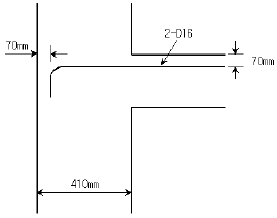
- 163mm
- 243mm
- 324mm
- 357mm
(정답률: 48%)
50. 다음 두 보의 최대 처짐량이 같기 위한 등분포하중의 비로 알맞은 것은? (단, 부재의 재질과 단면은 동일하며 A부재의 길이는 B부재 길이의 2배임)
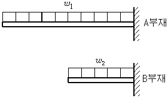
- ω2=2ω1
- ω2=4ω1
- ω2=8ω1
- ω2=16ω1
(정답률: 49%)
51. 그림과 같은 연속보에 있어 절점 B의 회전을 저지 시키기 위해 필요한 모멘트의 크기는?
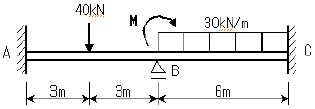
- 30kNㆍm
- 60kNㆍm
- 90kNㆍm
- 120kNㆍm
(정답률: 55%)
52. 다음에서 설명하는 용어는?
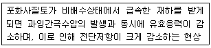
- 히빙
- 액상화
- 보일링
- 틱소트로피
(정답률: 67%)
53. 다음 그림과 같은 압축재 H-200×200×8×12가 부재의 중앙지점에서 약축에 대해 휨 A=63.53×102mm2 변형이 구속되어 있다. 이 부재의 탄성좌굴 응력도를 구하면? (단, 단면적, Ix=4.72×107mm4, Ix=1.60×107mm4, E=2⑤,000MPa)
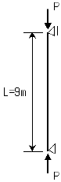
- 252N/mm2
- 186N/mm2
- 132N/mm2
- 108N/mm2
(정답률: 55%)
54. 다음 중 등가정적해석법에 따른 밑면전단력을 구하는 식으로 옳은 것은?
- V=CsW
- V=Cs/W
- V=Cs/2W
- V=Cs/3W
(정답률: 47%)
55. 다음 그림과 같은 철근콘크리트 단순보에서 지지점으로부터 유효깊이 d만큼 떨어진 위험단면에서의 계수전단력을 구하면? (단, WD=21kN/m, WL=24kN/m)
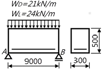
- 63.6kN
- 187.8kN
- 254.4kN
- 367.5kN
(정답률: 32%)
56. 다음 그림에서 진한 부분 단면에 단면 2차 반경 iz는?
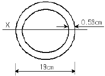
- 1.83cm
- 3.21cm
- 4.62cm
- 6.53cm
(정답률: 43%)
57. 그림과 같은 내민보에 집중하중이 작용할 때 A점의 처짐각 θA를 구하면?
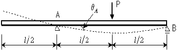
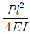
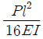
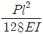
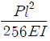
(정답률: 61%)
58. 다음 보에서 B점으로부터 2개의 하중이 지나갈 때 최대 휨모멘트가 발생하는 거리 x를 구하면?
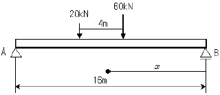
- 6.5m
- 7.5m
- 8.5m
- 9.5m
(정답률: 60%)
59. 그림과 같은 구조물의 각 부재에 대한 분할 모멘트 MOA, MOB, MOC, MOD를 옳게 구한 것은?
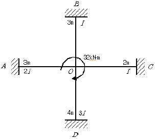
- MOA=4.74kNㆍm, MOB=2.37kNㆍm
MOC=3.55kNㆍm, MOD=5.34kNㆍm - MOA=4.74kNㆍm, MOB=2.37kNㆍm
MOC=3.91kNㆍm, MOD=4.98kNㆍm - MOA=9.48kNㆍm, MOB=4.74kNㆍm
MOC=7.11kNㆍm, MOD=10.67kNㆍm - MOA=9.48kNㆍm, MOB=4.74kNㆍm
MOC=7.82kNㆍm, MOD=9.96kNㆍm
(정답률: 50%)
60. 다음 그림과 같은 충전형 각형강관 합성기둥의 강재비와 폭두께비를 구하면? (단, 각형강관 A×B×t=300×300×6, As=6,993m2)
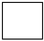
- 강재비 : 0.078, 폭두께비 : 50
- 강재비 : 0.078, 폭두께비 : 48
- 강재비 : 0.098, 폭두께비 : 50
- 강재비 : 0.098, 폭두께비 : 48
(정답률: 46%)
4과목: 건축설비
61. 승객 스스로 운전하는 전자동 엘리베이터로 카버튼이나 승강장의 호출신호로 가동, 정지를 이루는 엘리베이터 조작방식은?
- 카 스위치 방식
- 승합 전자동식
- 시그널 컨트럴 방식
- 레코드 컨트럴 방식
(정답률: 70%)
62. 압축식 냉동기의 주요 구성요소가 아닌 것은?
- 재생기
- 압축기
- 증발기
- 응축기
(정답률: 67%)
63. 습공기가 어느 한계까지 냉각되면 그 속에 있던 수증기는 이슬방울로 응축되기 시작하는데 이 때의 온도를 무엇이라 하는가?
- 노점온도
- 습구온도
- 건구온도
- 절대온도
(정답률: 72%)
64. 에스켈레이터에 관한 설명 중 옳지 않은 것은?
- 수송능력은 엘리베이터의 10배 정도이다.
- 연속적으로 승객을 수송할 수 있다.
- 에스켈레이터의 경사는 일반적으로 30도 이하로 한다.
- 에스켈레이터는 장거리 대량수송을 할 때 효과적이다.
(정답률: 74%)
65. 국소식 급탕방식에 대한 설명 중 옳지 않은 것은?(오류 신고가 접수된 문제입니다. 반드시 정답과 해설을 확인하시기 바랍니다.)
- 배관의 열손실이 크다.
- 급탕개소와 급탕량이 많은 경우에 유리하다.
- 급탕개소마다 가열기의 설치 스페이스가 필요하다.
- 건물 완공 후에도 급탕 개소의 증설이 비교적 쉽다.
(정답률: 56%)
66. 다음 중 덕트의 치수를 결정하는 방법이 아닌 것은?
- 등속법
- 등마찰법
- 정압재취득법
- 균등법
(정답률: 54%)
67. 습공기의 엔탈피에 대한 설명 중 옳은 것은?
- 절대습도가 높을수록 작아진다.
- 건구온도가 높을수록 커진다.
- 수증기의 엔탈피에서 건공기의 엔탈피를 뺀 값이다.
- 습공기를 냉각ㆍ가습할 경우, 엔탈피는 항상 감소한다.
(정답률: 60%)
68. 옥내의 점검할 수 없는 은폐장소에 시설할 수 있는 배선방식은?
- 금속몰드 배선
- 금속덕트 배선
- 합성수지몰드 배선
- 금속관 배선
(정답률: 66%)
69. 트랩(Trap)의 유효봉수 깊이로 가장 알맞은 것은?
- 30~50mm
- 50~100mm
- 100~150mm
- 150~200mm
(정답률: 65%)
70. 설치된 감지기의 주변온도가 일정한 온도상승률 이상으로 되었을 경우에 작동하는 열감지기는?
- 이온화식 감지기
- 차동식 스폿형 감지기
- 광전식 감지기
- 정온식 스폿형 감지기
(정답률: 69%)
71. 양수량 2m3/min, 전양정 50m, 효율이 60%인 펌프의 축동력은? (단, 유체의 밀도는 1000kg/m3이다.)
- 27.22kW
- 16.33kW
- 9.8kW
- 2.77kW
(정답률: 54%)
72. 저항 5Ω, 7Ω, 8Ω을 직렬로 접속된 회로에 5A의 전류가 흐르려면 가해진 전압 V은 얼마인가?
- 50 V
- 100 V
- 200 V
- 250 V
(정답률: 69%)
73. 엘리베이터의 안전 장치에 관한 설명으로 옳은 것은?
- 전동기가 회전을 정지하였을 경우 스프링의 힘으로 브레이크 드럼을 눌러 엘리베이터를 정지시켜주는 장치는 전자 브레이크(Magnetic Brake)이다.
- 사고발생시 층 사이에 카(Car) 내의 승객이 카 밖으로 나가려고 할 경우 승강로의 벽과 카 사이의 공간으로 승객이 추락하는 것을 방지하기 위한 장치는 조속기(Governor)이다.
- 리미트 스위치에 의한 조속기의 동작에 의하여 비상시 엘리베이터를 안전하게 정지시키도록 하는 장치로 가이드 레일을 움켜잡아 정지시키는 장치는 역ㆍ결상릴레이이다.
- 카(Car)가 최상층이나 최하층에서 정상 위치를 벗어나 그 이상으로 운행하는 것을 방지하는 안전장치는 끼임 방지장치(Safety Shoe)이다.
(정답률: 56%)
74. 다음의 통기방식에 관한 설명 중 옳지 않은 것은?
- 신정통기 방식에서는 통기수직관을 설치하지 않는다.
- 루프 통기방식은 각 기구의 트랩마다 통기관을 설치하고 각각을 통기 수평지관에 연결하는 방식이다.
- 신정통기 방식은 배수수직관의 상부를 연장하여 신정통기관으로 사용하는 방식으로, 대기중에 개구한다.
- 각개 통기방식은 트랩마다 통기되기 때문에 가장 안정도가 높은 방식으로, 자기사이폰 작동의 방지에도 효과가 있다.
(정답률: 53%)
75. 다음의 중수도에 관한 설명 중 옳지 않은 것은?
- 중수도 원수로는 주로 잡용수가 사용되지만 냉각 배수, 하수처리수 등도 사용된다.
- 일반하수뿐만 아니라 빗물도 중수도의 원유가 될 수 있다.
- 중수도의 채용은 어려운 상수도 사정을 완화할 수 있고 하수처리장의 처리부하를 줄일 수 있다.
- 중수도는 냉각용, 살수용수, 음용수로 주로 사용된다.
(정답률: 69%)
76. 실의 크기가 6m×10m, 천정고가 2.5m인 사무실의 실내온도를 20℃로 유지하려고 한다. 외기온도가 -5℃이고 외기에 의한 환기를 시간당 1회 할 경우 외기에 의한 손실열량은? (단, 공기의 정압비열은 1.1kJ/kgㆍk, 밀도는 1.2kg/m3 이다.)
- 523.4 W
- 755.9 W
- 1,262.5 W
- 4,545 W
(정답률: 46%)
77. 최대 방수구역에 설치된 스프링클러헤드의 개수가 20개인 경우 스프링클러설비의 수원의 저수량은 최소얼마 이상 이어야 하는가? (단, 개방형 스프링 쿨러헤드 사용)
- 16m3
- 32m3
- 48m3
- 56m3
(정답률: 61%)
78. 전류의 3가지 작용에 속하지 않는 것은?
- 발열작용
- 화학작용
- 절연작용
- 자기작용
(정답률: 51%)
79. 복사난방에 대한 설명으로 옳지 않은 것은?
- 열용량이 작아 방열량 조절이 쉽다.
- 매립코일이 고장나면 수리가 어렵다.
- 천장고가 높은 곳에서 난방감을 얻을 수 있다.
- 실내에 방열기를 설치하지 않으므로 바닥을 유용하게 이용할 수 있다.
(정답률: 61%)
80. 다음의 공기조화방식에 관한 설명 중 옳지 않은 것은?
- 단일덕트방식은 전공기방식이다.
- 2중덕트방식은 냉ㆍ혼합으로 인한 혼합손실 있다.
- 팬 코일 유닛 방식은 전공기방식으로 수배관으로 인한 누수의 우려가 없다.
- 단일덕트방식은 부하특성이 여러 개의 상이나 존이 있는 건물에 적용하기가 어렵다.
(정답률: 74%)
5과목: 건축법규
81. 지하식 또는 건축물식 노외주차장에서 경사로가 직선형인 경우, 경사로의 차로너비는 최소 얼마 이상으로 하여야 하는가? (단, 2차선인 경우)
- 5m
- 6m
- 7m
- 8m
(정답률: 71%)
82. 막다른 도로의 길이가 30m인 경우, 이 도로가 건축법상 도로이기 위한 최소 너비는?
- 2m
- 3m
- 4m
- 6m
(정답률: 59%)
83. 주거기능을 위주로 이를 지원하는 일부 상업기능 및 업무기능을 보완하기 위하여 필요한 지역에 지정하는 용도지역은?
- 준주거지역
- 일반사업지역
- 근린상업지역
- 제2종일반주거지역
(정답률: 75%)
84. 다음의 거실의 반자높이와 관련된 기준 내용 중 ( )안에 해당되지 않는 건축물의 용도는?
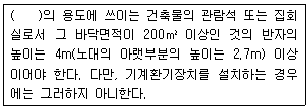
- 종교시설
- 장례시설
- 위락시설 중 유흥주점
- 문화 및 집회시설 중 전시장
(정답률: 71%)
85. 건축물의 면적, 높이 및 층수 등의 산정방법에 관한 설명 중 옳지 않은 것은?
- 지하층은 어떠한 경우라도 층수에 산입하지 않는다.
- 용적률은 산정할 때에는 지하층의 면적과 지상층의 주차용으로 사용되는 면적은 어떠한 경우라도 제외한다.
- 태양열을 주된 에너지원으로 이용하는 주택의 건축면적은 건축물의 외벽 중 내측 내력벽의 중심선을 기준으로 한다.
- 건축물의 높이 산정 시 건축물에 대지에 접하는 전면 도로의 노면에 고저차가 있는 경우에는 그 건축물이 접하는 범위의 전면도로부분의 수평거리에 따라 가중평균한 높이의 수평면을 전면도로면으로 본다.
(정답률: 43%)
86. 다음의 배연설비의 설치와 관련된 기준 내용 중 ( )안에 해당되는 건축물의 용도가 아닌 것은?
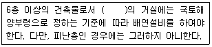
- 공동주택
- 판매시설
- 업무시설
- 숙박시설
(정답률: 39%)
87. 자연녹지지역으로서 노외주차장을 설치할 수 있는 지역에 해당하지 않는 것은?
- 토지의 형질변경 없이 주차장의 설치가 가능한 지역
- 주차장의 설치를 목적으로 토지의 형질변경 허가를 받은 지역
- 택지개발사업 등의 단지조성사업 등에 따라 주차 수요가 많은 지역
- 특별시장ㆍ광역시장ㆍ시장ㆍ군수 또는 구청장이 특히 주차장의 설치가 필요하다고 인정하는 지역
(정답률: 63%)
88. 다음 중 도시관리계획에 포함되지 않는 것은?
- 도시개발이나 정비사업에 관한 계획
- 광역계획권의 장기발전방향을 제시하는 계획
- 기반시설의 설치ㆍ정비 또는 개량에 관한 계획
- 용도지역ㆍ용도지구 지정 또는 변경에 관한 계획
(정답률: 75%)
89. 연면적 200m2를 초과하는 건축물에 설치하는 계단과 관련된 기준 내용으로 옳지 않은 것은?
- 높이가 3m를 넘는 계단에는 높이 3m 이내마다 너비 1.2m 이상의 계단참을 설치할 것
- 높이가 1m를 넘는 계단 및 계단참의 양옆에는 난간을 설치할 것
- 초등학교의 계단인 경우에는 계단 및 계단참의 너비는 120cm 이상으로 할 것
- 고등학교의 계단인 경우에는 계단 및 계단참의 너비는 150cm 이상으로 할 것
(정답률: 48%)
90. 각층의 거실 면적이 1000m2인 13층 관광호텔에 설치하여야 하는 승용승강기의 최소 대수는? (단, 8인승 승강기의 경우)
- 3대
- 4대
- 5대
- 6대
(정답률: 55%)
91. 부설주차장의 설치대상 시설물이 업무시설(외국공관 및 오피스텔은 제외한다.)인 경우 부설주차장의 설치기준으로 옳은 것은?
- 시설면적 100m2당 1대
- 시설면적 150m2당 1대
- 시설면적 200m2당 1대
- 시설면적 350m2당 1대
(정답률: 66%)
92. 건축물을 특별시나 광역시에 건축하는 경우 특별시장이나 광역시장의 허가를 받아야 하는 대상 건축물 기준으로 옳은 것은?
- 층수가 21층 이상이거나 연면적의 합계가 10만m2 이상인 건축물
- 층수가 21층 이상이거나 연면적의 합계가 5만m2 이상인 건축물
- 층수가 15층 이상이거나 연면적의 합계가 10만m2 이상인 건축물
- 층수가 15층 이상이거나 연면적의 합계가 5만m2 이상인 건축물
(정답률: 64%)
93. 개별관람석의 바닥면적이 1000m2인 공연장을 다음과 같이 계획하였을 경우, 옳지 않은 것은?
- 출구의 유효너비는 1.5m 이상으로 하였다.
- 관람석으로부터 바깥쪽으로의 출구로 쓰이는 문을 안여닫이로 하였다.
- 개별관람석의 바깥쪽에는 그 양쪽 및 뒤쪽에 각각 복도를 설치하였다.
- 개별관람석의 출구는 3개소 설치하였으며 출구의 유효너비의 합계는 6m로 하였다.
(정답률: 70%)
94. 건축허가를 받아야 하거나 건축신고를 하여야 하는 건축물의 건축 등을 위한 설계를 건축사가 하지 않아도 되는 경우에 해당하지 않는 것은?
- 바닥면적의 합계가 85m2 미만인 신축
- 바닥면적의 합계가 85m2 미만인 증축
- 바닥면적의 합계가 85m2 미만인 개축
- 바닥면적의 합계가 85m2 미만인 재축
(정답률: 64%)
95. 건축물의 용도분류상 문화 및 집회시설에 해당되는 것은?
- 박람회장
- 종교집회장
- 도서관
- 당구장
(정답률: 54%)
96. 개발제한구역의 지정목적과 가장 거리가 먼 것은?
- 도시의 무질서한 확산 방지
- 도시주변의 자연환경 보전
- 도시민의 건전한 생활환경 확보
- 도시주변지역의 계획적ㆍ단계적 개발을 위한 시가화 유보
(정답률: 53%)
97. 노외주창장의 출구 및 입구를 설치할 수 있는 곳은?
- 육교에서 4m 떨어진 도로의 부분
- 지하횡단보도에서 10m 떨어진 도로의 부분
- 초등학교 출입구로부터 8m 떨어진 도로의 부분
- 장애인복지시설 출입구로부터 15m 떨어진 도로의 부분
(정답률: 56%)
98. 건축물을 건축하는 경우 해당 건축물의 설계자가 국토해양부령으로 정하는 구조기준 등에 따라 그 구조의 안전을 확인할 때 건축구조기술사의 협력을 받아야 하는 대상 건축물 기준으로 옳지 않은 것은?(오류 신고가 접수된 문제입니다. 반드시 정답과 해설을 확인하시기 바랍니다.)
- 대중이용 건축물
- 6층 이상인 건축물
- 기중과 기둥 사이의 거리가 20m 이상인 건축물
- 한쪽 끝은 고정되고 다른 끝은 지지되지 아니한 구조로 된 차양 등이 외벽의 중심선으로부터 3m 이상 돌출된 건축물
(정답률: 32%)
99. 다음의 방화구획의 설치에 관한 기준을 적용하지 아니하거나 그 사용에 지장이 없는 범위에서 완화 하여 적용할 수 있는 건축물의 부분에 해당되지 않는 것은?
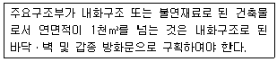
- 복층형 공동주택의 세대별 층간 바닥 부분
- 주요구조부가 내화구조 또는 불연재료로 된 주차장
- 계단실 부분ㆍ복도 또는 승강기의 승강로 부분으로서 그 건축물의 다른 부분과 방화구획으로 구획된 부분
- 문화 및 집회시설 중 식물원의 용도로 쓰는 거실로서 시선 및 활동공간의 확보를 위하여 불가피한 부분
(정답률: 49%)
100. 배수용으로 쓰이는 배관설비에 관한 기준 내용으로 옳지 않은 것은?
- 우수관과 오수관 하나로 하여 배관할 것
- 배관설비의 오수에 접하는 부분은 내수재료를 사용할 것
- 배관설비에는 배수트랩ㆍ통기관을 설치하는 등 위생에 지장이 없도록 한다.
- 배출시키는 빗물 또는 우수의 양 및 수질에 따라 그 적당한 용량 및 경사를 지게 할 것
(정답률: 73%)